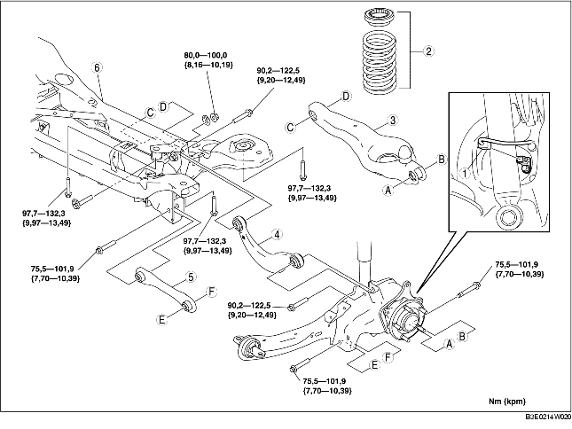

1. Ta loss den bakre givaren för automatisk nivåjustering.
(Se DEMONTERING/MONTERING AV GIVARE FÖR AUTOMATISK NIVÅJUSTERING.)
2. Demontera bakre krängningshämmare.
(Se DEMONTERING/MONTERING AV BAKRE KRÄNGNINGSHÄMMARE.)
3. Demontera kolkanistern.
(Se DEMONTERING/MONTERING AV KOLKANISTERN [ZJ, Z6, LF].)
4. Demontera i den ordning som anges i tabellen.
5. Montera i omvänd ordning mot demonteringen.
6. Kontrollera hjulinställningen och justera vid behov.
(Se HJULINSTÄLLNING BAK.)

.
|
1
|
Kontakt/kablage för ABS hjulhastighetsgivare
|
|
2
|
Spiralfjäder bak
|
|
3
|
Nedre bärarm bak
|
|
4
|
Övre länkarm bak
|
|
5
|
Bakre tvärstag
|
|
6
|
Tvärbalk bak
|
1. Stötta upp den bakre tvärbalken med domkraften och ta bort bulten.
2. Demontera bakre tvärbalken.